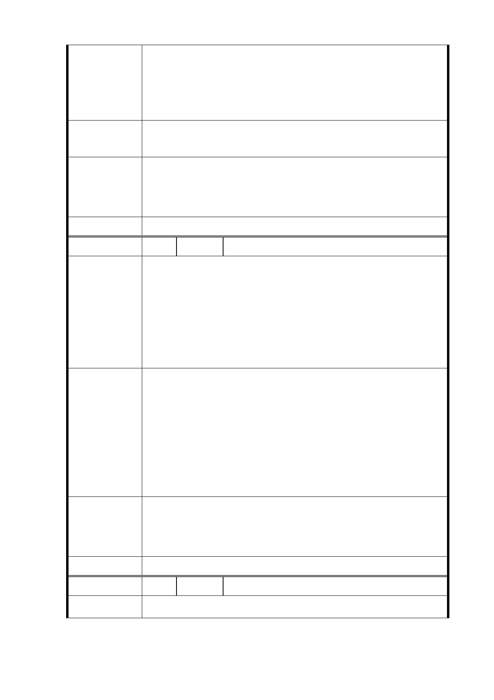

二、 本基地鄰近台北盆地東側斷層帶，高密度開發有危險。
三、 本站為信義捷運終點站，開發完成後，所容納人口將
達萬人以上，如因天災及公安發生，疏散將有困難，
大面積開發會危及信義捷運線安全。
反對大道路及福德街交會處，即園區東南側捷運共構宅高密
建議辦法
度開發。
一、 交通部分同編號 8，另大道路現為 15 公尺。
市 府 回 覆 二、 地質安全部分同編號 6。
意 見 三、 市府於後續規劃設計時，將積極考量公共安全，另大
型公共開放空間之留設，亦得作為防災使用。
委 員 會 決 議 同編號 1
編 號 15 陳情人 蕭○君
一、 縱無斷層，惟地質似仍屬脆弱，多戶數大量體對本地
周邊社區及環境造成衝擊，不可小覷。
陳 情 理 由 二、 開發案造成社區居民惶惶不安，且衝擊現有居住環境
及安寧，且房地合一稅制通過，房市長期看空，大興
土木使市容狹窄，似非上策。
三、 周邊居民亦有綠地、避難、運動等需求，盼市府重視。
一、 建議先進行公正透明及科學之地質檢測暨環境評估，
惟縱安全無虞，仍建議縮小量體。
二、 建議市府收購市場上餘屋空屋，提供市民租賃，以取
建議辦法
代現行大規模開發公有地之思維。
三、 台北為盆地地形，熱島效應明顯，原應最大規模保留
空地、綠地空間，市府亦可考量原地不開發或保留做
為防災避難用。
一、 地質安全部分同編號 6。
市 府 回 覆 二、 本案係為配合本府公共住宅政策，達成 4 年內提供 2
意 見 萬戶、8 年內提供 5 萬戶公共住宅之政策目標。
三、 公共開放空間部分編號 1。
委 員 會 決 議 同編號 1
編 號 16 陳情人 杜○綺
陳 情 理 由 一、 公共住宅 2,800戶戶數過多且樓層過高，有安全之虞。
- 28 -